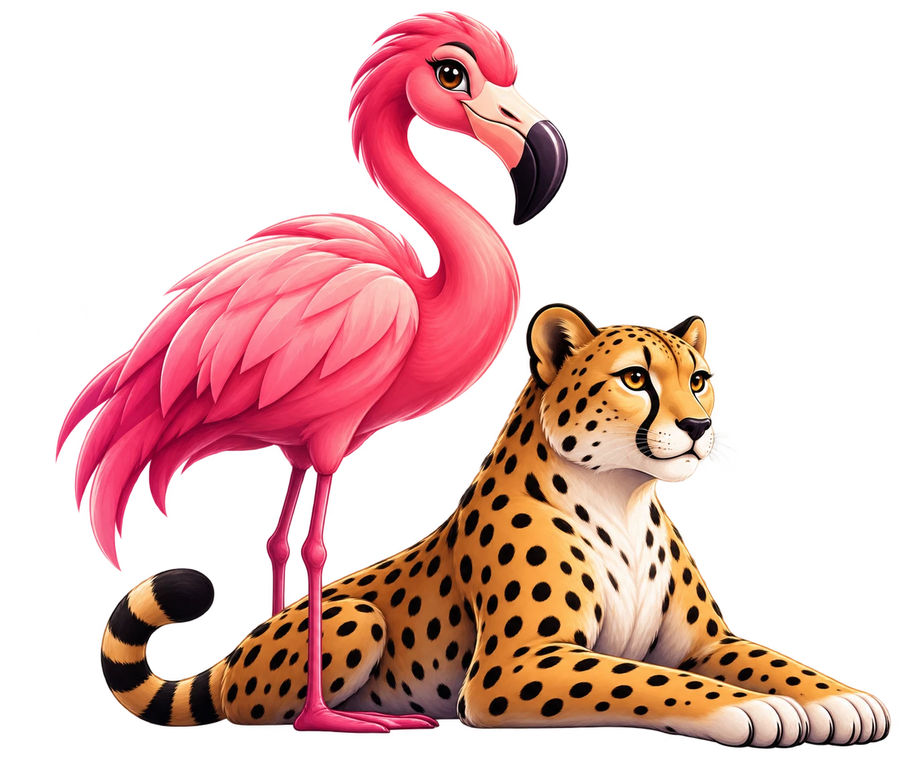

<body style="margin:0;overflow:hidden;font-family:sans-serif">
  <style>
    @keyframes drift { from { transform: translateX(0) } to { transform: translateX(-480px) } }
    @keyframes bob   { 0% { transform: translateY(0) } 50% { transform: translateY(-10px) } 100% { transform: translateY(0) } }
    .l1 { animation: drift 48s linear infinite }
    .l2 { animation: drift 30s linear infinite }
    .l3 { animation: drift 18s linear infinite }
  </style>

  <!-- the whole scene is one in-flow stage; children are absolute layers -->
  <div style="position:relative;width:480px;height:640px;overflow:hidden;background:linear-gradient(180deg,#2a1a4a 0%,#6b3a6b 55%,#c85a7a 100%)">
    <!-- sun -->
    <div style="position:absolute;top:70px;left:300px;width:120px;height:120px;border-radius:50%;background:radial-gradient(circle at 40% 40%,#fff3c4,#f6c177)"></div>

    <!-- three animated mountain ranges (2D canvas, drawn in Pascal) -->
    <canvas id="back"  width="960" height="300" class="l1" style="position:absolute;left:0;top:250px;width:960px;height:300px"></canvas>
    <canvas id="mid"   width="960" height="300" class="l2" style="position:absolute;left:0;top:320px;width:960px;height:300px"></canvas>
    <canvas id="front" width="960" height="300" class="l3" style="position:absolute;left:0;top:380px;width:960px;height:300px"></canvas>

    <!-- foreground: the duo, with a gentle bob -->
    

    <!-- ground -->
    <div style="position:absolute;left:0;bottom:0;width:480px;height:64px;background:#15101f"></div>
  </div>
</body>
